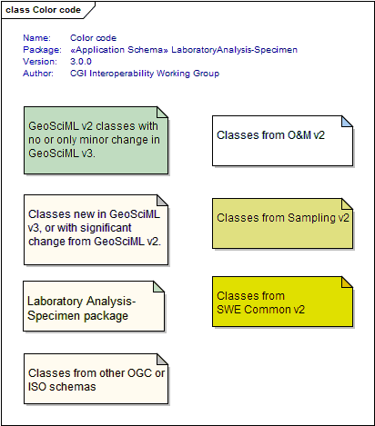

Package GeoSciML/LaboratoryAnalysis-Specimen
The LaboratoryAnlaysis-Specimen application schema extends the ISO19156 schema for Observations, Measurements and Sampling. It specifically describes processes and results related to the analysis of (geological) samples using instruments, most commonly in a laboratory environment. (Design of this package is based upon, and extends, the MOLES v3 data model.)
Tagged Values |
||
| Tag | Value | Notes |
| classMap | https://www.seegrid.csiro.au/subversion/GeoSciML/geochemistry/trunk/classmap/ClassMap_LaboratoryAnalysis_GeoSciML_v3.xml | |
| gmlProfileSchema | #NOTES#Description: URL of the schema location of a GML profile (optional) | Description: URL of the schema location of a GML profile (optional) |
| owner | IUGS Commission for the Management and Application of Geoscience Information | |
| schemaLocation | https://schemas.geosciml.org/laboratoryanalysis-specimen/3.0/laboratoryAnalysis-Specimen.xsd | |
| targetNamespace | http://xmlns.geosciml.org/LaboratoryAnalysis-Specimen/3.0 | Default: FIXME Description: Target XML namespace of the application schema |
| version | 3.0.0 | Default: FIXME Description: Current version of the application schema |
| xmlns | gsmlla | Default: FIXME Description: Namespace prefix to be used as short form of the target namespace |
| xsdDocument | laboratoryAnalysis-Specimen.xsd | Default: FIXME Description: Name of an XML Schema document to create representing the content of this package |
| xsdEncodingRule | iso19136_2007_INSPIRE_Extensions | Values: iso19136_2007 | iso19139_2007 | iso19136_2007_INSPIRE_Extensions Default: iso19136_2007 Description: XML Schema encoding rule to apply |
UML Diagram: Color code
